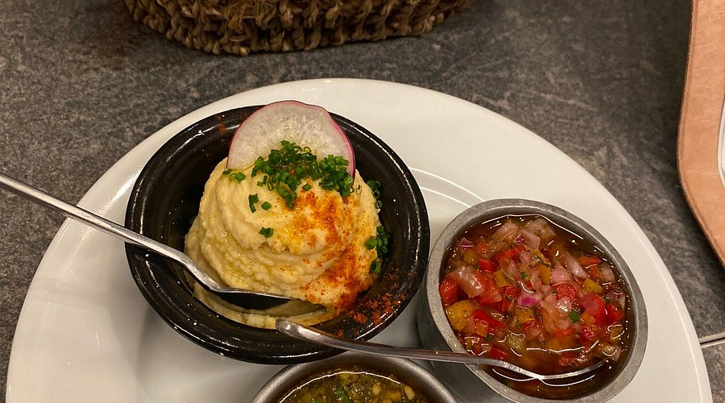
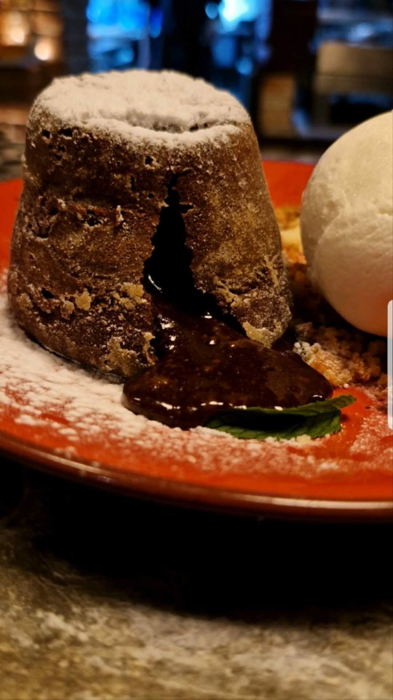
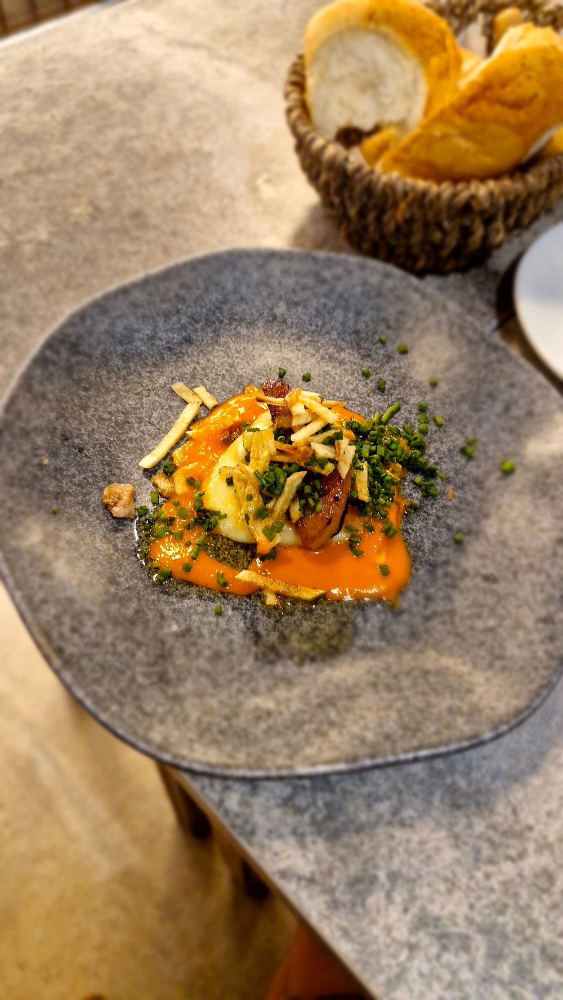
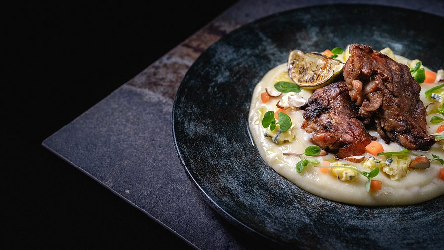
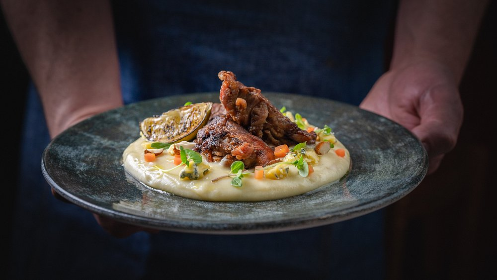
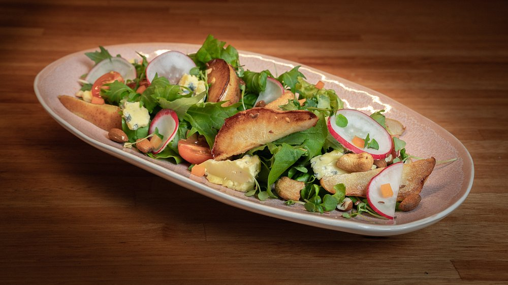
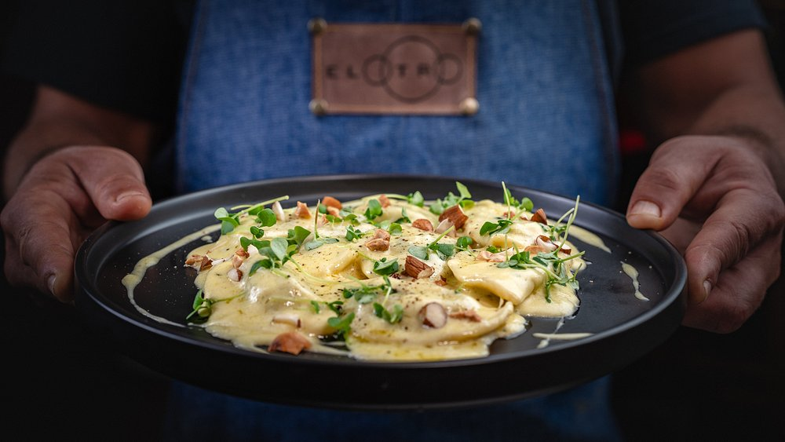

Parrillada · Desde el corazón de la ciudad
El Otro Portón
Carnes asadas a la parrilla, servidas con dedicación en un ambiente cálido para disfrutar con familia y amigos.
Cocina de verdad, a la parrilla
En El Otro Portón cocinamos como se cocinaba antes: fuego, paciencia y ganas. Cada corte se asa a la parrilla hasta el punto justo, con el condimento de la casa y el punto que corresponde.
Nuestro local está en el corazón de Colonia del Sacramento, a pasos de la plaza de armas. Un espacio cálido, con buena música y la mesa siempre lista para recibir a quien quiera sentarse a compartir.
+15
Años asando
4
Tipos de corte
300+
Mesas por semana

El local y lo que sale de la parrilla
La parrilla
Cada plato sale de la parrilla cuando está en su punto, no antes. Las empanadas se amasan a mano y las tortillas llevan su tiempo. Nada se sirve apurado.
Para compartir








Postres
Bebidas
Precios en pesos uruguayos. Menú de ejemplo: se actualiza según la temporada.
Reservá tu mesa
Escribinos o llamanos. Para grupos grandes y eventos, mejor coordiná con antelación.
Dirección
Colonia del Sacramento, Departamento de Colonia
Teléfono / WhatsApp
Horarios
Jueves a sábado: 20:00 a 00:00
Domingos: 12:00 a 17:00